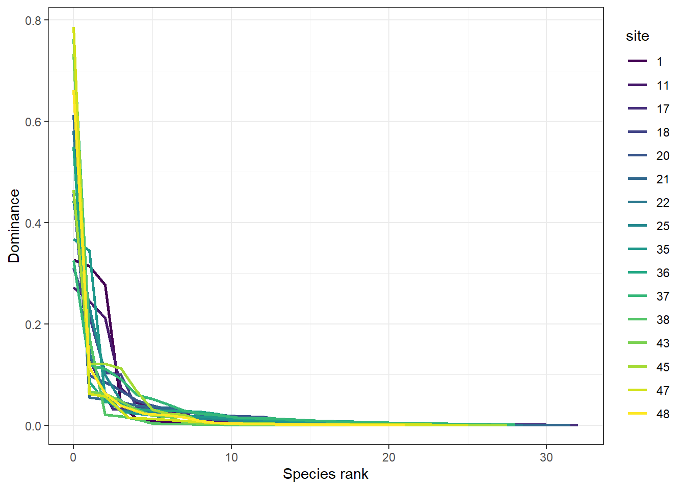
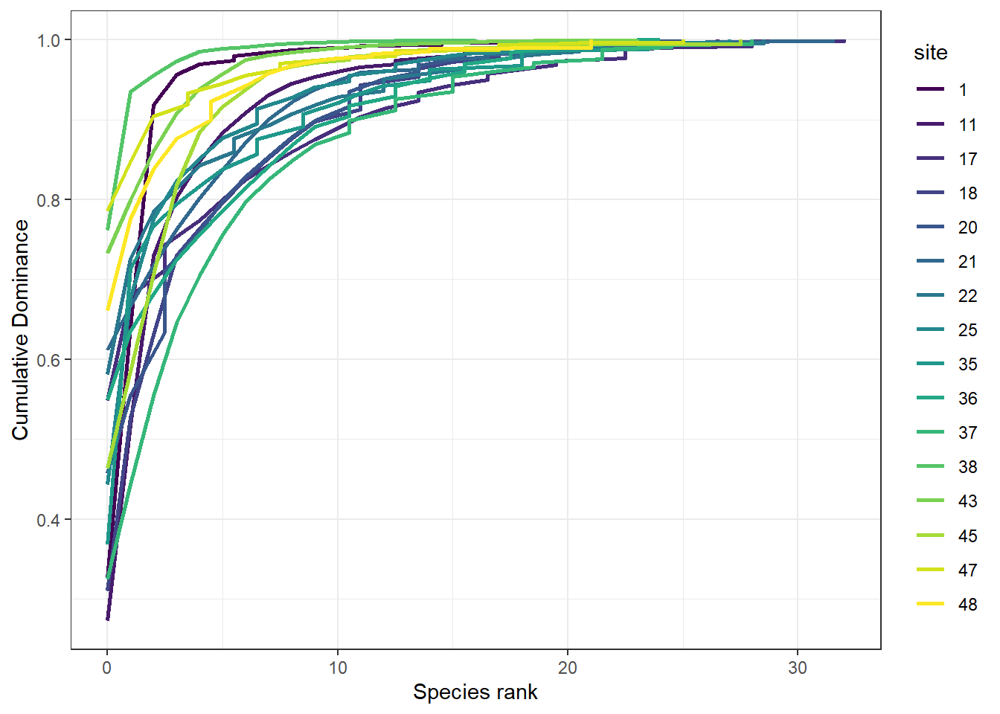
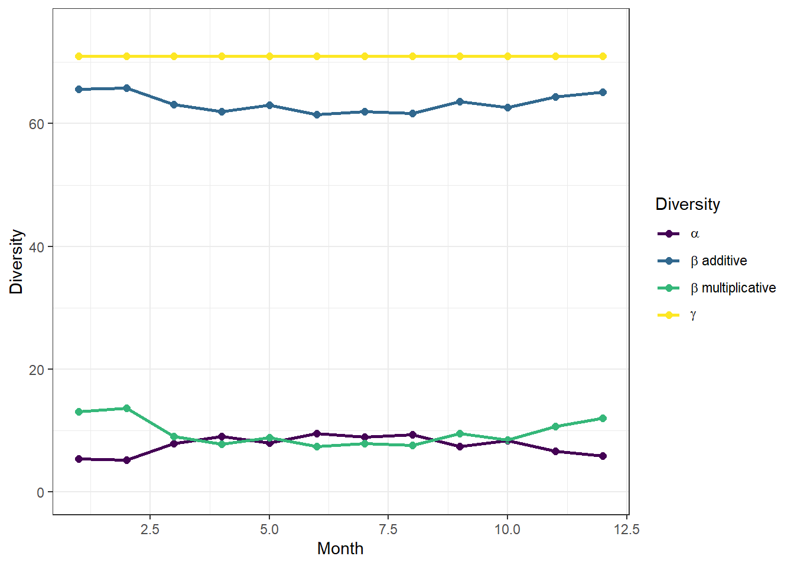
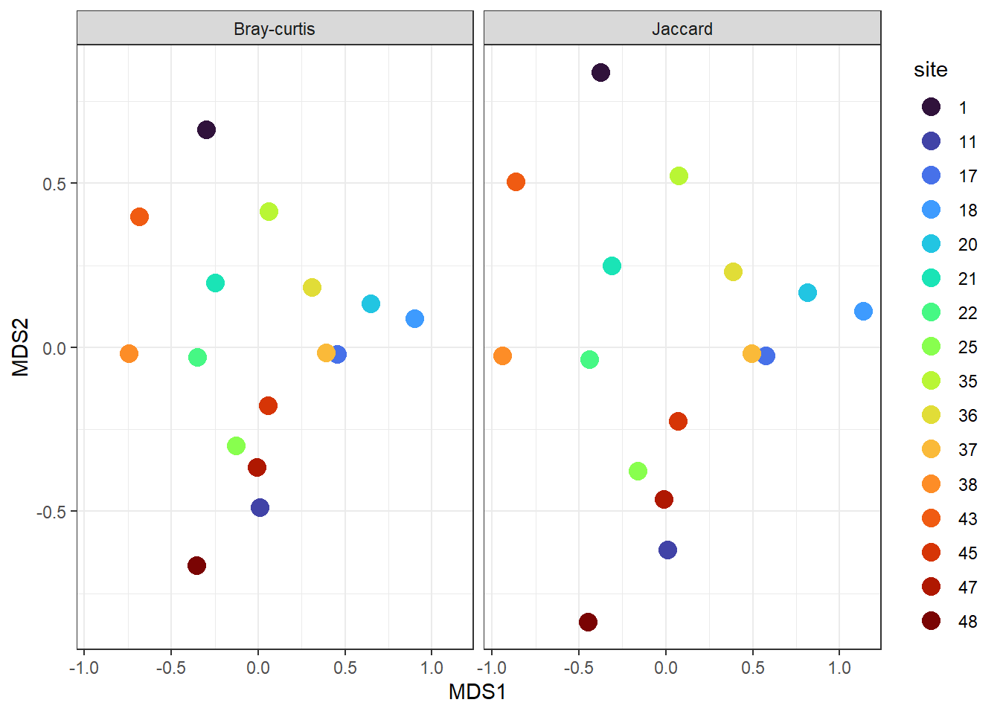

library(vegan)
## Loading required package: permute
library(tidyverse)
## ── Attaching core tidyverse packages ──────────────────────── tidyverse 2.0.0 ──
## ✔ dplyr 1.1.4 ✔ readr 2.1.5
## ✔ forcats 1.0.0 ✔ stringr 1.5.1
## ✔ ggplot2 3.5.2 ✔ tibble 3.3.0
## ✔ lubridate 1.9.4 ✔ tidyr 1.3.1
## ✔ purrr 1.1.0
## ── Conflicts ────────────────────────────────────────── tidyverse_conflicts() ──
## ✖ dplyr::filter() masks stats::filter()
## ✖ dplyr::lag() masks stats::lag()
## ℹ Use the conflicted package (<http://conflicted.r-lib.org/>) to force all conflicts to become errors
df = read_csv('data/Pontchartrain.csv') |>
mutate(richness = specnumber(across(`Skipjack Herring`:`Feather Blenny`)),
H = diversity(across(`Skipjack Herring`:`Feather Blenny`)),
simp = diversity(across(`Skipjack Herring`:`Feather Blenny`), "simpson"),
invsimp = diversity(across(`Skipjack Herring`:`Feather Blenny`),"inv"))
## Rows: 232 Columns: 73
## ── Column specification ────────────────────────────────────────────────────────
## Delimiter: ","
## dbl (72): site, Skipjack Herring, Bay Anchovy, Inland Silverside, Atlantic ...
## date (1): date
##
## ℹ Use `spec()` to retrieve the full column specification for this data.
## ℹ Specify the column types or set `show_col_types = FALSE` to quiet this message.
d = df |>
group_by(site) |>
summarize(across(richness:invsimp, list(mean = mean, sd = sd)))
d
## # A tibble: 16 × 9
## site richness_mean richness_sd H_mean H_sd simp_mean simp_sd invsimp_mean
## <dbl> <dbl> <dbl> <dbl> <dbl> <dbl> <dbl> <dbl>
## 1 1 6.58 2.54 0.882 0.546 0.423 0.253 2.19
## 2 11 7.5 2.80 1.24 0.634 0.565 0.263 3.37
## 3 17 9.38 2.58 1.40 0.296 0.610 0.122 2.82
## 4 18 7.06 2.52 1.36 0.393 0.633 0.154 3.20
## 5 20 8.2 2.81 1.42 0.544 0.632 0.231 3.54
## 6 21 10.3 5.35 1.27 0.761 0.534 0.296 3.32
## 7 22 8.08 3.50 1.21 0.473 0.545 0.197 2.69
## 8 25 7.27 2.91 1.25 0.478 0.586 0.198 2.94
## 9 35 5.62 3.10 1.10 0.490 0.541 0.198 2.54
## 10 36 8.81 3.21 1.34 0.486 0.571 0.181 2.83
## 11 37 8.69 3.36 1.57 0.445 0.681 0.157 3.96
## 12 38 5.08 2.54 0.735 0.548 0.369 0.278 1.95
## 13 43 8.25 4.27 1.13 0.583 0.525 0.253 2.77
## 14 45 7.93 2.19 1.15 0.462 0.529 0.213 2.64
## 15 47 7.07 3.06 0.995 0.590 0.459 0.283 2.50
## 16 48 4.75 2.11 0.874 0.440 0.456 0.240 2.20
## # ℹ 1 more variable: invsimp_sd <dbl>Key for workshop 8 exercises
Exercises
For these exercises use the LDWF Pontchartrain seine sampling dataset. This dataset is the abundance for each species (in wide format) for 16 sites over 1 year.
- Using the Pontchartrain dataset calculate the mean and SD for species richness, Shannon, Simpson, and inverse Simpson for each sampling site.
- Plot the dominance (Whittiker) and K-dominance curves for each site.
library(viridis)
## Loading required package: viridisLite
marsh_w = read_csv('data/Pontchartrain.csv') |>
mutate(site = as.character(site),
month = month(date),
richness = specnumber(across(`Skipjack Herring`:`Feather Blenny`)))
## Rows: 232 Columns: 73
## ── Column specification ────────────────────────────────────────────────────────
## Delimiter: ","
## dbl (72): site, Skipjack Herring, Bay Anchovy, Inland Silverside, Atlantic ...
## date (1): date
##
## ℹ Use `spec()` to retrieve the full column specification for this data.
## ℹ Specify the column types or set `show_col_types = FALSE` to quiet this message.
marsh_l = marsh_w |>
pivot_longer(cols = 3:73,
names_to = "Species",
values_to = "Count")
df = marsh_l |>
group_by(site) |>
filter(Count > 0) |>
mutate(Total = sum(Count)) |>
group_by(site, Species) |>
summarise(Count_Spp = sum(Count),
Total_Count = max(Total)) |>
mutate(p_i = Count_Spp/Total_Count,
rank = length(unique(Species))-rank(p_i)) |>
ungroup()
## `summarise()` has grouped output by 'site'. You can override using the
## `.groups` argument.
ggplot(df, aes(rank, p_i, color = site))+
geom_line(size = 1)+
labs(x = 'Species rank',
y = 'Dominance',
color = 'site')+
scale_color_viridis_d()+
theme_bw()
## Warning: Using `size` aesthetic for lines was deprecated in ggplot2 3.4.0.
## ℹ Please use `linewidth` instead.
## K-dominance curves
# Cumulative dominance by species rank
df = marsh_l |>
group_by(site) |>
filter(Count > 0) |>
mutate(Total = sum(Count)) |>
ungroup() |>
group_by(site, Species) |>
summarise(Count_Spp = sum(Count),
Total_Count = max(Total)) |>
mutate(p_i = Count_Spp/Total_Count,
rank = length(unique(Species))-rank(p_i)) |>
arrange(rank, .by_group = T) |>
mutate(cumsum = cumsum(p_i))
## `summarise()` has grouped output by 'site'. You can override using the
## `.groups` argument.
ggplot(df, aes(rank, cumsum, color = site))+
geom_line(size = 1)+
labs(x = 'Species rank',
y = 'Cumulative Dominance',
color = 'site')+
scale_color_viridis_d()+
theme_bw()
- Plot the \(\alpha\), \(\beta\), and \(\gamma\) diversity for each site for each sampling date in 2007. Use either additive or multiplicative \(\beta\) diversity. Plot diversity over time.
marsh_w = read_csv('data/Pontchartrain.csv') |>
mutate(site = as.character(site),
month = month(date),
richness = specnumber(across(`Skipjack Herring`:`Feather Blenny`)))
## Rows: 232 Columns: 73
## ── Column specification ────────────────────────────────────────────────────────
## Delimiter: ","
## dbl (72): site, Skipjack Herring, Bay Anchovy, Inland Silverside, Atlantic ...
## date (1): date
##
## ℹ Use `spec()` to retrieve the full column specification for this data.
## ℹ Specify the column types or set `show_col_types = FALSE` to quiet this message.
marsh_l = marsh_w |>
pivot_longer(cols = 3:73,
names_to = "Species",
values_to = "Count")
marsh_l
## # A tibble: 16,472 × 6
## site date month richness Species Count
## <chr> <date> <dbl> <int> <chr> <dbl>
## 1 1 2007-01-03 1 3 Skipjack Herring 1
## 2 1 2007-01-03 1 3 Bay Anchovy 101
## 3 1 2007-01-03 1 3 Inland Silverside 3
## 4 1 2007-01-03 1 3 Atlantic Croaker 0
## 5 1 2007-01-03 1 3 Blue Crab 0
## 6 1 2007-01-03 1 3 Gulf Killifish 0
## 7 1 2007-01-03 1 3 Naked Goby 0
## 8 1 2007-01-03 1 3 Threadfin Shad 0
## 9 1 2007-01-03 1 3 Gulf Menhaden 0
## 10 1 2007-01-03 1 3 Hogchoker 0
## # ℹ 16,462 more rows
gammaDiv = length(unique(marsh_l$Species))
# calculate beta diversity
betaDiv = marsh_w |>
group_by(month) |>
summarise(alpha = mean(richness, na.rm = TRUE),
gamma = gammaDiv,
beta_a = gamma - alpha,
beta_m = gamma/alpha) |>
pivot_longer(alpha:beta_m, names_to = 'metric', values_to = 'value')
# plot
ggplot(betaDiv, aes(month, value, color= metric))+
geom_point(size = 2)+
geom_line(linewidth = 1)+
scale_y_continuous(limits = c(0,75))+
scale_color_viridis_d(labels = c(expression(alpha),
expression(beta ~ 'additive'),
expression(beta ~ 'multiplicative'),
expression(gamma)))+
labs(x = 'Month', y = 'Diversity', color = 'Diversity')+
theme_bw()
- Plot the Bray-Curtis and Jaccard dissimilarity for each site.
df = read_csv('data/Pontchartrain.csv')|>
group_by(site) |>
summarise(across(`Skipjack Herring`:`Feather Blenny`, mean))
## Rows: 232 Columns: 73
## ── Column specification ────────────────────────────────────────────────────────
## Delimiter: ","
## dbl (72): site, Skipjack Herring, Bay Anchovy, Inland Silverside, Atlantic ...
## date (1): date
##
## ℹ Use `spec()` to retrieve the full column specification for this data.
## ℹ Specify the column types or set `show_col_types = FALSE` to quiet this message.
marsh_comm = df |>
select(-site)
site = df$site
marsh.nmds.bc = metaMDS(marsh_comm, distance = "bray", k = 2, try = 100)
## Square root transformation
## Wisconsin double standardization
## Run 0 stress 0.1713243
## Run 1 stress 0.1850531
## Run 2 stress 0.2083866
## Run 3 stress 0.2234641
## Run 4 stress 0.1928429
## Run 5 stress 0.192595
## Run 6 stress 0.1792536
## Run 7 stress 0.2281307
## Run 8 stress 0.1824607
## Run 9 stress 0.1921039
## Run 10 stress 0.1929776
## Run 11 stress 0.2208193
## Run 12 stress 0.1855959
## Run 13 stress 0.1929776
## Run 14 stress 0.1713243
## ... New best solution
## ... Procrustes: rmse 5.386571e-06 max resid 1.498823e-05
## ... Similar to previous best
## Run 15 stress 0.2126773
## Run 16 stress 0.2238435
## Run 17 stress 0.197252
## Run 18 stress 0.1929776
## Run 19 stress 0.1925951
## Run 20 stress 0.1907178
## *** Best solution repeated 1 times
marsh.nmds.jc = metaMDS(marsh_comm, distance = "jaccard", k = 2, try = 100)
## Square root transformation
## Wisconsin double standardization
## Run 0 stress 0.1713243
## Run 1 stress 0.190923
## Run 2 stress 0.192595
## Run 3 stress 0.2206215
## Run 4 stress 0.2050391
## Run 5 stress 0.1941045
## Run 6 stress 0.1713243
## ... Procrustes: rmse 1.921485e-05 max resid 4.439603e-05
## ... Similar to previous best
## Run 7 stress 0.216151
## Run 8 stress 0.1713243
## ... Procrustes: rmse 5.616967e-05 max resid 0.0001298551
## ... Similar to previous best
## Run 9 stress 0.197252
## Run 10 stress 0.1978806
## Run 11 stress 0.1929776
## Run 12 stress 0.1713243
## ... New best solution
## ... Procrustes: rmse 8.911235e-06 max resid 1.995077e-05
## ... Similar to previous best
## Run 13 stress 0.197252
## Run 14 stress 0.1855958
## Run 15 stress 0.1855958
## Run 16 stress 0.1944959
## Run 17 stress 0.1792536
## Run 18 stress 0.1961123
## Run 19 stress 0.1929776
## Run 20 stress 0.2265401
## *** Best solution repeated 1 times
bc = data.frame(marsh.nmds.bc[["points"]]) |>
mutate(site = site,
Dissimilarity = 'Bray-curtis')
jc = data.frame(marsh.nmds.jc[["points"]]) |>
mutate(site = site,
Dissimilarity = 'Jaccard')
nmds_output = bind_rows(bc,jc) |> as_tibble()
ggplot(nmds_output, aes(MDS1, MDS2, color = as.factor(site)))+
geom_point(size = 4)+
facet_wrap(~Dissimilarity)+
labs(color = 'site')+
scale_color_viridis_d(option = 'turbo')+
theme_bw()